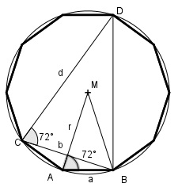

Aufgabe 206 Der Boden eines Gefäßes wird von einem regel- mäßigen Zehneck mit einem Umfang von 20 cm gebildet. Wie groß ist dessen Umkreisradius r?

Das Dreieck ABM hat einen Mittelpunktswinkel 360° von ------ = 36° und ist gleichschenklig. 10 180° - 36° Die Basiswinkel sind ------------- = 72°. 2 Das Dreieck CBD ist gleichschenklig mit einem Basiswinkel von 72° (Herleitung Aufgabe 106). Dreieck ABM und Dreieck CBD sind ähnlich. d r --- = --- b a b d = --- * (1 + √5) 2 b --- * (1 + √5) 2 r ----------------- = --- | *a b a a --- * (1 + √5) = r 2 U 20 cm a = ---- = -------- = 2 cm 10 10 2 cm r = ------- * (1 + √5) = 3,2 cm 2